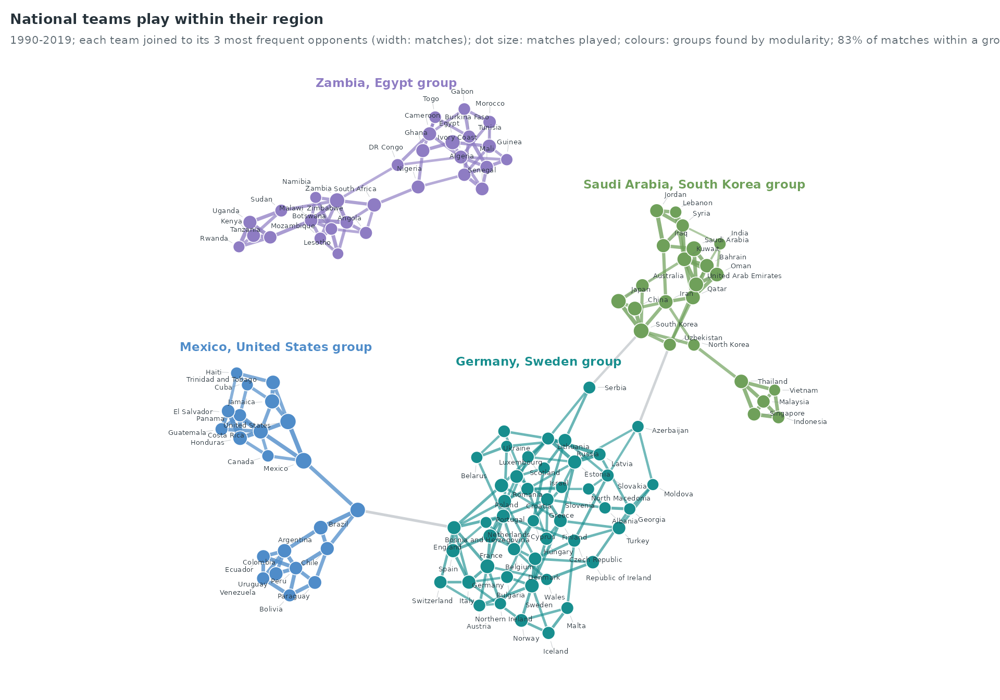
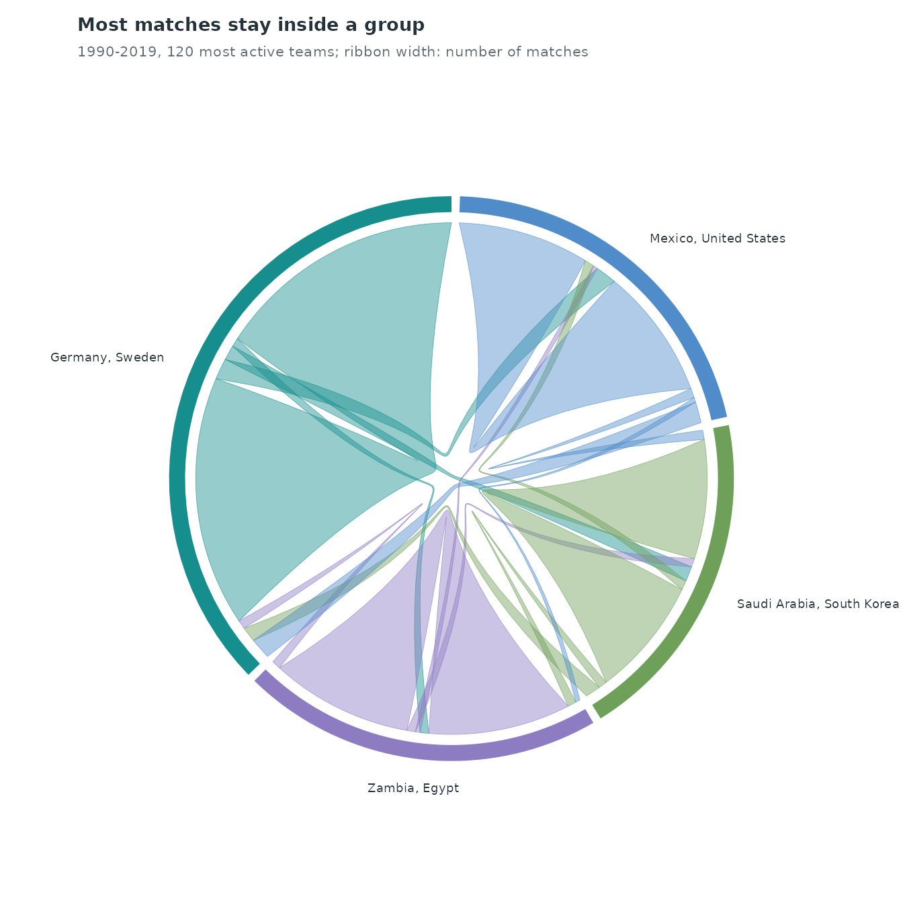
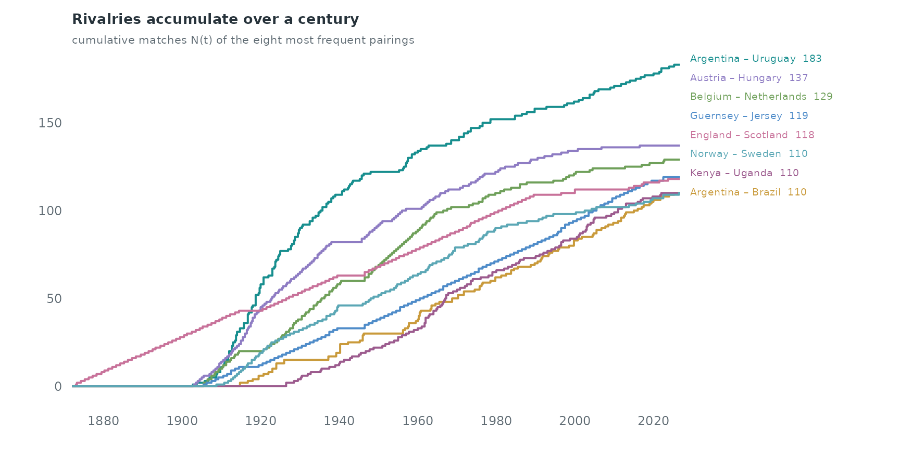
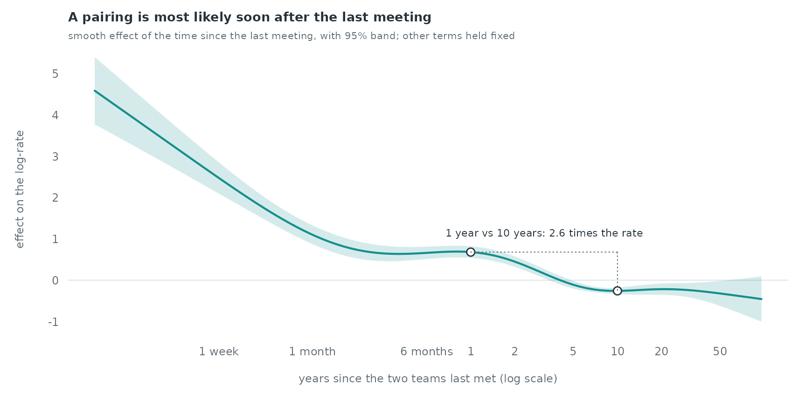
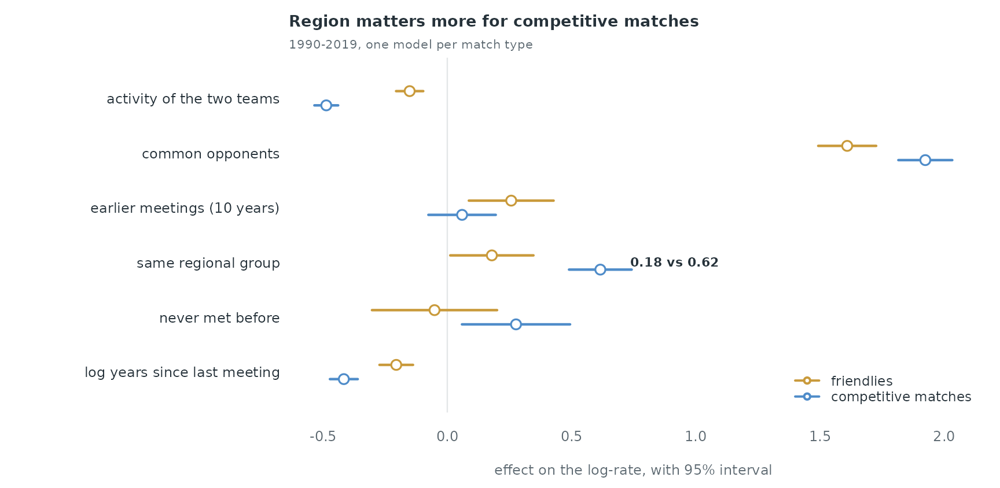

Case study: international football, 1872–2026
Source:vignettes/articles/case-football.Rmd
case-football.RmdInternational football as an undirected event process
football_results lists every men’s international match
since the first one, Scotland against England on 30 November 1872. A
match is an undirected relational event: two national teams meet at a
time. This case study asks what makes a pairing happen. Do the same
teams meet again soon after a meeting (rivalries)? Do teams that share
opponents meet each other (triadic closure)? Does a regional structure,
visible in the network, raise the rate of pairs within a region? And do
friendlies follow the same rules as competitive matches?
data(football_results)
f <- football_results
f$a <- pmin(f$sender, f$receiver) # one order per pair: the match is undirected
f$b <- pmax(f$sender, f$receiver)
f$t <- as.numeric(f$date) / 365.25 + 1970 # decimal years
c(matches = nrow(f), teams = length(unique(c(f$a, f$b))),
first = format(min(f$date)), last = format(max(f$date)))
#> matches teams first last
#> "49945" "337" "1872-11-30" "2026-10-06"36.6% of the matches are friendlies. In the 36,669 matches played at one team’s home ground, the home team wins 50.7% and loses 26.4%; at neutral venues the first-listed team wins 44.2%. The data have no confederation column; the regional structure below is found from the matches themselves.
Who plays whom
The network of the 1990–2019 matches among the 120 most active teams. Each team is joined to the three opponents it met most often; groups are found by modularity (Louvain) on all their matches.
par(mar = c(0.5, 0.5, 2.6, 0.5))
nodes <- data.frame(id = lay$id, x = lay$x, y = lay$y, size = as.numeric(act[lay$id]),
col = gcol[as.character(lay$group)], label = lay$id)
e <- pt[keep, ]
same <- lay$group[match(e$from, lay$id)] == lay$group[match(e$to, lay$id)]
draw_network(nodes, data.frame(from = e$from, to = e$to, w = e$w,
col = ifelse(same, gcol[as.character(lay$group[match(e$from, lay$id)])], "#B4BBC0")),
label_cex = 0.42, node_scale = c(0.5, 2.2))
for (g in names(gsize)) { # name each group beside its cluster
k <- lay$group == as.character(g)
text(mean(lay$x[k]), max(lay$y[k]) + 0.045, paste(gname[[g]], "group"), col = gcol[[g]], font = 2, cex = 0.72, xpd = TRUE)
}
title_left("National teams play within their region",
sprintf("1990-2019; each team joined to its 3 most frequent opponents (width: matches); dot size: matches played; colours: groups found by modularity; %s of matches within a group",
pct(n_within / sum(pt$w), 0)))
The 4 groups follow geography: Germany, Sweden (46 teams); Zambia, Egypt (29 teams); Saudi Arabia, South Korea (23 teams); Mexico, United States (22 teams). 82.7% of the matches between these 120 teams are played within a group.
G <- grp_all[match(pt$from, top)]; H <- grp_all[match(pt$to, top)]
M <- tapply(pt$w, list(factor(G, names(gsize)), factor(H, names(gsize))), sum)
M[is.na(M)] <- 0
M <- (M + t(M)) / 2 # undirected: half each way
dimnames(M) <- list(gname, gname)
par(mar = c(0.5, 3, 2.6, 3))
chord(M, setNames(gcol, gname), label_cex = 0.58)
title_left("Most matches stay inside a group", "1990-2019, 120 most active teams; ribbon width: number of matches")
Rivalries: the same pairs, again and again
The counting processes of the eight pairs that have met most often since 1872:
pc <- sort(table(paste(f$a, f$b, sep = " – ")), decreasing = TRUE)[1:8]
grid <- seq(1872, max(f$t), by = 0.25)
N <- sapply(names(pc), function(p) findInterval(grid, sort(f$t[paste(f$a, f$b, sep = " – ") == p])))
par(mar = c(3, 3.6, 2.6, 11))
matplot(grid, N, type = "s", lty = 1, lwd = 2, col = pal[1:8], axes = FALSE, xlab = "", ylab = "", xaxs = "i")
axis(1, tick = FALSE, cex.axis = 0.75, col.axis = ink_soft, line = -0.5)
axis(2, las = 1, tick = FALSE, cex.axis = 0.75, col.axis = ink_soft, line = -0.5)
end <- N[nrow(N), ]; o <- order(end); ya <- end; yy <- end[o]
for (i in seq_along(yy)[-1]) yy[i] <- max(yy[i], yy[i - 1] + diff(par("usr")[3:4]) * 0.055)
ya[o] <- yy
text(par("usr")[2], ya, paste0(names(pc), " ", pc), pos = 4, xpd = TRUE, cex = 0.62, col = pal[1:8])
title_left("Rivalries accumulate over a century", "cumulative matches N(t) of the eight most frequent pairings")
Argentina – Uruguay have met 183 times. The flat stretches of 1914–1918 and 1939–1945 are the two world wars.
The whole record, four years at a time, on a fixed layout of the 80 teams with most matches since 1872 (colours: the groups of the network above; grey: teams outside it):
From 4 matches in 1872–1875, the record grows to 4,008 in 2008–2011. The regional groups fill in one after another: the median team of each group played its first international in 1922 (Germany, Sweden group), 1922 (Mexico, United States group), 1953 (Saudi Arabia, South Korea group), 1958 (Zambia, Egypt group).
A relational event model for pairings
We model the matches of 1990–2019 (26,282 matches). For each match,
sample_non_events() draws one pair of teams that had both
played before (scope = "appearance"); it is run on the
whole record since 1872 so that “played before” counts every earlier
match, and only the 1990–2019 strata are kept. The sampler draws ordered
pairs; each control is put in the same alphabetical order as the
matches.
hist <- f[f$t < 2020, c("a", "b", "t", "tournament")]
hist <- hist[order(hist$t), ]
cc <- sample_non_events(data.frame(sender = hist$a, receiver = hist$b, time = hist$t),
scope = "appearance", seed = 1)
cc <- cc[cc$time >= 1990, ]
swap <- cc$sender > cc$receiver
cc[swap, c("sender", "receiver")] <- cc[swap, c("receiver", "sender")]
table(cc$event)
#>
#> 0 1
#> 26282 26282endogenous_features() computes directed statistics, so
the undirected ones are computed here from the match history strictly
before each row’s time, over the previous ten years:
- activity: matches played by each of the two teams;
- common opponents: teams that both have played (triadic closure);
- repetition: earlier matches between the two teams;
- years since the last meeting, at any time since 1872, with an indicator for pairs that have never met.
und_stats <- function(i, j, t, hist, window = 10) {
team <- c(hist$a, hist$b); opp <- c(hist$b, hist$a); tt <- c(hist$t, hist$t)
o <- order(team, tt); team <- team[o]; opp <- opp[o]; tt <- tt[o]
first <- match(unique(team), team); names(first) <- unique(team)
last <- c(first[-1] - 1, length(team)); names(last) <- names(first)
pt <- split(hist$t, paste(hist$a, hist$b, sep = "|"))
recent <- function(x, s) { # matches of team x in [s - window, s)
if (is.na(first[x])) return(list(n = 0, opp = character(0)))
r <- first[x]:last[x]; tx <- tt[r]
hi <- findInterval(s, tx, left.open = TRUE); lo <- findInterval(s - window, tx, left.open = TRUE)
k <- if (hi > lo) r[(lo + 1):hi] else integer(0)
list(n = length(k), opp = unique(opp[k]))
}
out <- t(vapply(seq_along(i), function(k) {
a <- recent(i[k], t[k]); b <- recent(j[k], t[k])
p <- pt[[paste(i[k], j[k], sep = "|")]]; p <- p[p < t[k]]
c(act_i = a$n, act_j = b$n, common = length(intersect(a$opp, b$opp)),
pair = sum(p >= t[k] - window), since = if (length(p)) t[k] - max(p) else NA)
}, numeric(5)))
as.data.frame(out)
}
cc <- cbind(cc, und_stats(cc$sender, cc$receiver, cc$time, hist))The regional groups for the model are found on the 1960–1989 matches, so that the grouping does not use the matches it is meant to explain. Teams that did not play then (many post-1990 states among them) belong to no group.
old <- f[f$t >= 1960 & f$t < 1990, ]
old_pairs <- aggregate(list(w = rep(1, nrow(old))), list(from = old$a, to = old$b), sum)
g_old <- layout_graph(old_pairs)
grp <- setNames(g_old$group, g_old$id)
cc$same_group <- as.integer(!is.na(grp[cc$sender]) & !is.na(grp[cc$receiver]) &
grp[cc$sender] == grp[cc$receiver])
cc$never <- as.integer(is.na(cc$since))
cc$log_since <- log(ifelse(is.na(cc$since), max(cc$since, na.rm = TRUE), cc$since))
cc$log_activity <- log1p(cc$act_i) + log1p(cc$act_j)
cc$log_common <- log1p(cc$common)
cc$log_pair <- log1p(cc$pair)
aggregate(cbind(act_i, common, pair, never) ~ event, cc, mean)
#> event act_i common pair never
#> 1 0 58.30538 3.075527 0.2207975 0.8722319
#> 2 1 88.36725 17.334411 2.7739518 0.1584735
cv <- c("log_activity", "log_common", "log_pair", "same_group", "never", "log_since")
w <- widen_case_control(cc, covariates = cv)
fit <- rem(~ log_activity + log_common + log_pair + same_group + never + nl(log_since, k = 6),
data = w, method = "gam")
est <- summary(fit)$p.table[, c("Estimate", "Std. Error")]
round(est, 3)
#> Estimate Std. Error
#> log_activity -0.357 0.018
#> log_common 1.801 0.040
#> log_pair 0.189 0.068
#> same_group 0.446 0.051
#> never -0.281 0.287
d <- smooth_data(fit$fit, 1) # x is log(years)
lo <- d$fit - 1.96 * d$se; hi <- d$fit + 1.96 * d$se
par(mar = c(3.4, 3.8, 2.6, 1))
plot(d$x, d$fit, type = "n", ylim = range(lo, hi, 0), axes = FALSE, xlab = "", ylab = "")
abline(h = 0, col = rule, lwd = 1.2)
polygon(c(d$x, rev(d$x)), c(lo, rev(hi)), col = alpha(pal[1], 0.18), border = NA)
lines(d$x, d$fit, col = pal[1], lwd = 2.2)
yrs <- c(1 / 52, 1 / 12, 0.5, 1, 2, 5, 10, 20, 50, 100)
yrs <- yrs[log(yrs) >= min(d$x) & log(yrs) <= max(d$x)]
axis(1, at = log(yrs), labels = c("1 week", "1 month", "6 months", "1", "2", "5", "10", "20", "50", "100")[
match(yrs, c(1 / 52, 1 / 12, 0.5, 1, 2, 5, 10, 20, 50, 100))], tick = FALSE, cex.axis = 0.75, col.axis = ink_soft, line = -0.5)
axis(2, las = 1, tick = FALSE, cex.axis = 0.75, col.axis = ink_soft, line = -0.5)
mtext("years since the two teams last met (log scale)", side = 1, line = 2, cex = 0.75, col = ink_soft)
mtext("effect on the log-rate", side = 2, line = 2.3, cex = 0.75, col = ink_soft)
y1 <- d$fit[which.min(abs(d$x - log(1)))]; y10 <- d$fit[which.min(abs(d$x - log(10)))]
points(log(c(1, 10)), c(y1, y10), pch = 21, bg = "white", col = ink, cex = 1.2, lwd = 1.4)
segments(log(1), y1, log(10), y1, col = ink_soft, lty = 3); segments(log(10), y1, log(10), y10, col = ink_soft, lty = 3)
text(mean(log(c(1, 10))), y1 + 0.45, sprintf("1 year vs 10 years: %s times the rate", fmt(exp(y1 - y10), 1)), cex = 0.7, col = ink)
title_left("A pairing is most likely soon after the last meeting",
"smooth effect of the time since the last meeting, with 95% band; other terms held fixed")
Pairs that meet again within days, the two legs of a tie or two
matches of one tournament, have the highest rate. Holding the other
terms fixed, a pairing whose last meeting was one year ago has a
log-rate 0.94 higher than one that last met ten years ago (a factor of
2.6). Common opponents carry the largest linear effect, 1.80 per unit of
log(1 + common opponents) (s.e. 0.04); a pair in the same
1960–1989 group has a log-rate 0.45 higher (s.e. 0.05). Activity enters
with -0.36: given the common opponents, which grow with activity, more
active teams do not meet each other more.
Friendlies and competitive matches
Each stratum holds one match and its control, so the strata of friendlies and of competitive matches give two separate partial likelihoods: the rate of a friendly and the rate of a competitive match between a pair. Both use the same statistics, with the time since the last meeting entering linearly.
type <- hist$tournament[match(paste(cc$sender, cc$receiver, cc$time)[cc$event == 1],
paste(hist$a, hist$b, hist$t))]
cc$friendly <- (type == "Friendly")[match(cc$stratum, cc$stratum[cc$event == 1])]
fits <- lapply(c(friendly = TRUE, competitive = FALSE), function(fr) {
wd <- widen_case_control(cc[cc$friendly == fr, ], covariates = cv)
summary(rem(~ log_activity + log_common + log_pair + same_group + never + log_since,
data = wd, method = "gam"))$p.table[, 1:2]
})
sapply(fits, function(p) round(p[, 1], 3))
#> friendly competitive
#> log_activity -0.151 -0.487
#> log_common 1.610 1.924
#> log_pair 0.257 0.060
#> same_group 0.179 0.616
#> never -0.051 0.277
#> log_since -0.205 -0.416
lab <- c(log_activity = "activity of the two teams", log_common = "common opponents",
log_pair = "earlier meetings (10 years)", same_group = "same regional group",
never = "never met before", log_since = "log years since last meeting")
k <- length(lab); y <- k:1
par(mar = c(3.4, 13, 2.6, 1))
rng <- range(sapply(fits, function(p) c(p[, 1] - 1.96 * p[, 2], p[, 1] + 1.96 * p[, 2])), 0)
plot(NA, xlim = rng, ylim = c(0.5, k + 0.5), axes = FALSE, xlab = "", ylab = "")
abline(v = 0, col = rule, lwd = 1.2)
for (m in 1:2) {
p <- fits[[m]][names(lab), ]; yy <- y + c(0.13, -0.13)[m]
segments(p[, 1] - 1.96 * p[, 2], yy, p[, 1] + 1.96 * p[, 2], yy, col = pal[c(6, 4)][m], lwd = 2.2)
points(p[, 1], yy, pch = 21, bg = "white", col = pal[c(6, 4)][m], cex = 1.2, lwd = 1.6)
}
axis(1, tick = FALSE, cex.axis = 0.75, col.axis = ink_soft, line = -0.5)
axis(2, at = y, labels = lab, las = 1, tick = FALSE, cex.axis = 0.75, col.axis = ink, line = -0.6)
mtext("effect on the log-rate, with 95% interval", side = 1, line = 2, cex = 0.75, col = ink_soft)
sgp <- sapply(fits, function(p) p["same_group", 1])
text(max(sgp) + 0.12, y[names(lab) == "same_group"], sprintf("%s vs %s", fmt(sgp[["friendly"]], 2), fmt(sgp[["competitive"]], 2)),
adj = 0, cex = 0.7, col = ink, font = 2)
legend("bottomright", c("friendlies", "competitive matches"), col = pal[c(6, 4)], pch = 21, pt.bg = "white",
lwd = 2, bty = "n", cex = 0.72, text.col = ink)
title_left("Region matters more for competitive matches", "1990-2019, one model per match type")
The same-group coefficient is 0.62 for competitive matches and 0.18 for friendlies: qualifying competitions are organised by confederation, while friendlies are arranged across regions. The rate of a competitive match also falls faster with the time since the last meeting (-0.42 against -0.21 per unit of log years), as qualifying groups bring the same teams together in successive cycles.
What is not in the model
- Teams that dissolved (the Soviet Union, Yugoslavia, Czechoslovakia) stay in the control pool after their last match; a risk set that removes them would sharpen the activity effect.
- The regional groups come from the network; a confederation table joined to the team names would give the institutional grouping.
- Home and away are dropped by putting each pair in alphabetical order. A directed model of who hosts whom is a separate question.